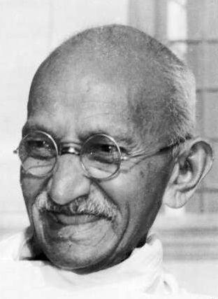

EVEN GENOEG OVER LAMA'S GEPRAAT!
HIER
VANILLECAKE
Koop eerst dit
- 200g zelfrijzend bakmeel
- 200g boter
- 200g suiker
- 4 eitjes
- 7g vanillesuiker
Doe dan dit
- Vet een cakeblik in, plaats eventueel een bakpapiertje in de vorm.
- Verwarm de oven voor op 170 graden.
- Maak het cake-beslag
- Meng de boter met de suiker en vanillesuiker.
- Meng hierna één voor één de eieren door het mengsel.
- Voeg het zelfrijzend bakmeel toe
- Giet het beslag in de vorm.
- Bak de cake een uurtje.

Ghandi approves of this message.